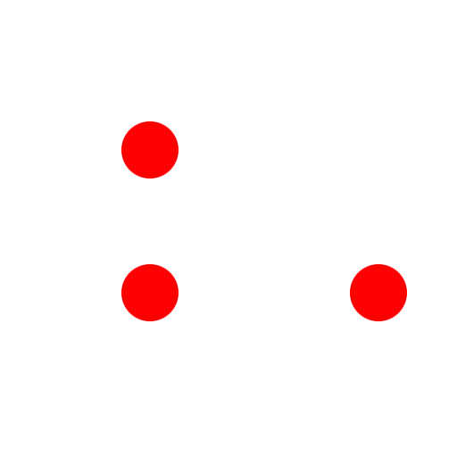
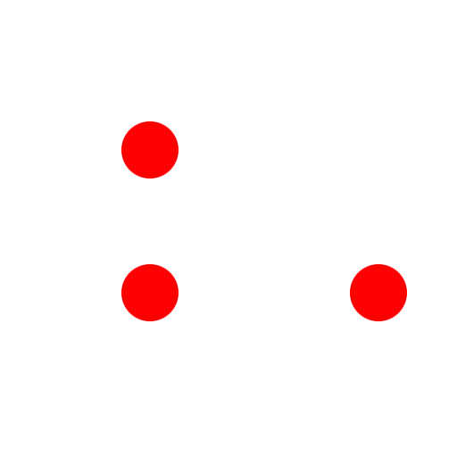
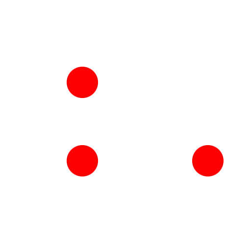

Menü: Zeichnen - Polylinie - Polylinie zeichnen
Tastenkürzel: P, L
Kommandos: polyline | pl

Beschreibung:
Mit diesem Werkzeug können Sie Polylinien erstellen. Eine Polylinie ist eine zusammenhängende Sequenz von Linien- und Bogensegmenten.
Vorgehensweise:
Beachten Sie: Falls Ihre Polylinie Bogensegmente enthält, aktivieren Sie die Option 'Kreisbogen' und geben Sie den Radius in der Optionenwerkzeugleiste ein bevor Sie den Endpunkt des Bogensegments setzten. Der Bogen schliesst tangential an das letzte Segment an.